《最强大脑》第二季晋级赛第二场中，有一个项目叫“国家宝藏”。屏幕上出现一个六面体，各个面上都填满了五位数。把六面体展开来，屏幕上满满一片数字，大约有2000个。在这些数字中，有7个是质数（也叫素数）。由这7个质数连成的直线仅有两条互相相交，其交点即宝藏之藏匿点，要求求出该点的坐标。显然，挑战成功的核心就是找出这些质数，也就是要找出这7个不能作因数分解的五位数来。
早在2000多年前，古希腊人就对质数作了定义。此外，欧几里得做了一个质数的个数是无限的经典证明，埃拉托塞尼创造了“筛法”，以找出整数集中的质数。现在，高年级小学生都学会了因数分解。
自古以来，质数都是纯数学的研究对象，常年躺在象牙塔中，除数学家外无人问津。但时光荏苒，万物反转。1978年，竟有一种“不可破译”的密码出现。据说，它令不少数论学家身价倍增，成了保密部门争相抢夺的人才。一边是简单易懂的因数分解，另一边是神秘的密码体系，如此意外的联姻，其黏合剂竟是大整数的因数分解，实在令人吃惊。
在此，笔者不想谈这些五位数是如何找出的，只是与读者一起进行这次“质数·密码”的穿越时空的奇幻旅行。这自然要从传统密码说起。
甲把一条信息发送给乙，要求除甲乙二人之外，不能让第三人得知该信息的含义，这种通信称为保密通信。用自然语言或其他能为常人所识的符号传递信息的信号称为明文，把明文作某种变换与伪装后得到的信号称为密文。把明文变换成密文的过程称为加密，加密规则叫作密钥；把密文还原成明文的过程称为解密。
保密通信自古有之，不但至今不衰，而且已经发展为一个受到各国政府与军方十分重视的研究课题。这一节就与大家共享传统密码的轶事与其方法。古希腊有斯巴达天书，传说斯巴达派一奴隶到前线给莱桑德将军送来一条腰带，如图10-1所示。莱桑德拿到腰带后，把它缠在一根木棍上（如图10-2所示）得明文
Kill King（杀死暴君）
在这个例子中，图10-1中的符号是密文，图10-2中的符号是明文，密钥是“腰带缠木棍”。
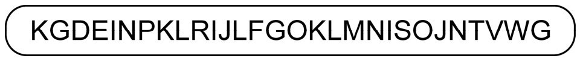
图10-1
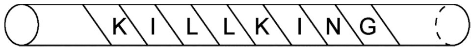
图10-2
用数学语言来表示，上述密钥等价于把
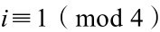
的符号抄出即得明文。密文中其余的字母是随机的，目的是为了加密，使外人不易破译。可惜当时数学还没有发展到这个程度，莱桑德将军还得试用直径合适的木棍，否则就可能会出现乱码，不明其意。还有一种密码称为代换密码。据说是古罗马时期的恺撒大帝首先发明的，因此又称恺撒密码。首先，分别用数字0至25代表英文字母A至Z。密钥是加一整数k后以26为模，1至25的整数皆可以当作密钥的特定值（若k为0即为不加密）。例如，若k=7，要传递的信息为CAT，则密码为JHA。当收到JHA后，应将每个字母的序号减7，得到的数字对应的信息即为CAT。
法国密码专家维吉尼亚利用0到25对应26个拉丁字母编号，再取一个英语单词作密钥，发明了一种加强版的代换密码，写成Radio=（17，0， 3，8，14）。如果明文是I am Wang Shuhe，写成8，0，12，22，0，13，6， 18，7，20，7，4。加密过程如下：
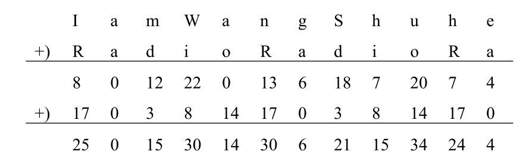
对上述求得的数列进行处理，即求被26除的余数（mod 26），得数列
25 0 15 4 14 4 6 21 15 8 24 4
这个数列在自然顺序的字母表（以0到25编号）中对应的字母为
Z A P E O E G V P I Y E
此即密文！解密过程如下：
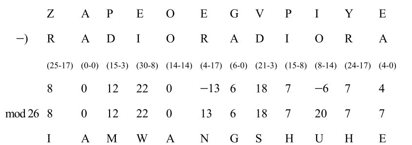
此外，还有一种要用到乘法规则的密码。例如，密文是0011010010101011011110000011100111100010101011000011011101101001 0011101110000111100111111010101011111001110010011111100010101011 1011011，密钥规则是（α1,α2,α3,α4,α5）·（1,2,4,8,16），解密过程如下。先把上述密文以每5个码为一组进行点乘，得出
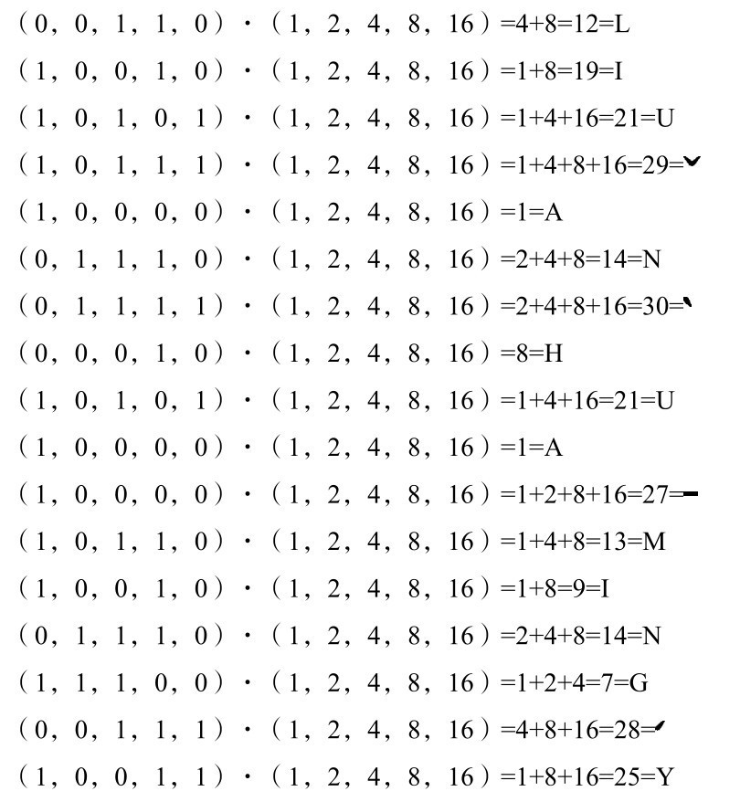
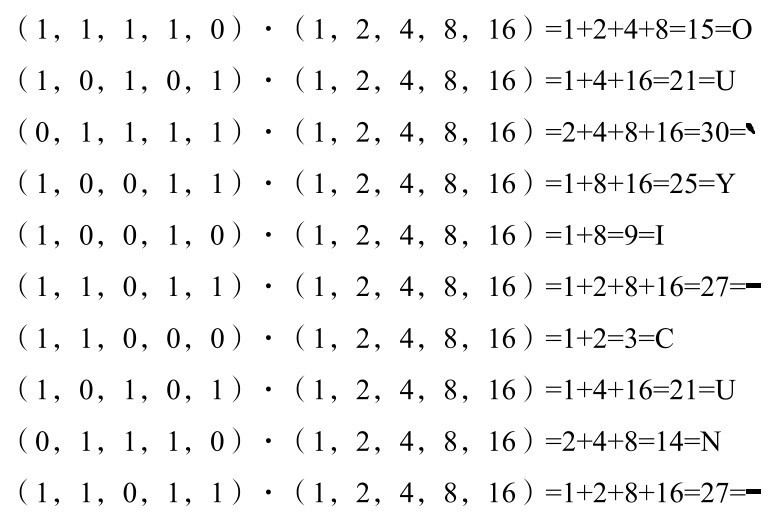
可将密文译成
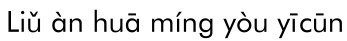
汉语译文就是：柳暗花明又一村。
当然，密文中不只有ABCD或0和1，还有一些奇特的符号。下面介绍一个有趣的例子。欧洲中世纪有不少秘密团体。其中，阿尔卑斯山区的石工人数众多，势力不小，他们发明了一种颇为别致的代换密码。这种密码用两种九宫格与两个交叉十字来代表英语中的26个字母（如图10-3所示）。
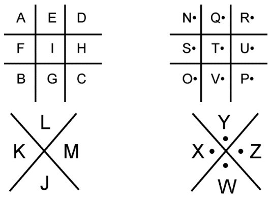
图10-3
如下图形的密码
译成英语就是The King is deed（国王死了）。原来当时在位的英国国王死后秘不发丧，因此石工们传出了这一秘密消息。
这些例子举不胜举，方法多种多样，目的只有一个，就是不让第三者知道消息的内容。但解密者自然不甘落后，用尽浑身解数来一窥机密。接下来，不妨来看一看解密者的智慧。
在英国，最有名的侦探小说是亚瑟·柯南道尔所写的《福尔摩斯探案全集》，其中《归来记》里的《跳舞的人》就是一篇以密码为主题的短篇小说。现在，我们来看一下福尔摩斯在此密码案中所展现的智慧与才华，领略解密的逻辑与技巧。当然，此处仅提及与密码术有关的情节。
一年前才与艾尔西结为连理的丘比特写了一封信给福尔摩斯，信内附了一张纸条，纸条上横着画了一些正在跳舞的奇形怪状的小人，如图10-4所示。
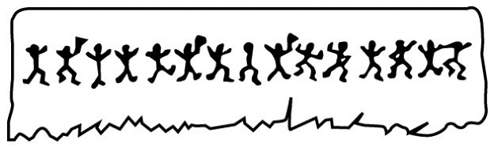
图10-4
因为艾尔西一看到这张纸条便昏倒了，所以丘比特写了一封信给福尔摩斯并于次日到伦敦拜访。跟福尔摩斯会面后的隔天早上，丘比特发现另一系列跳舞的小人被用粉笔画在了工具房门上，如图10-5所示。
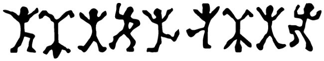
图10-5
过了两个早上，又出现了新的小人，如图10-6所示。
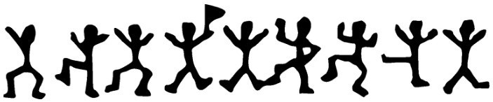
图10-6
三天后，在日晷仪上发现一张纸条，很潦草地画了一行小人，跟上次的完全一样。那夜在工具房门上又有人画了一行跳舞的小人，排列方式跟前两次的完全相同。隔天早上那扇门上除了已经有的那行小人外，又添了几个新画的，如图10-7所示。
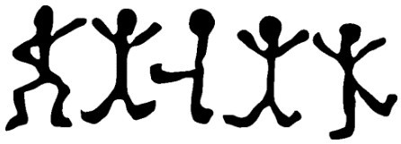
图10-7
图10-5到图10-7是丘比特第二次拜访福尔摩斯时提供的。当时福尔摩斯十分兴奋，丘比特的背影一消失，他就急忙把所有纸条都摆在面前，开始分析。最后，他满意地叫了一声，显然已有重大突破。后来，他发了一封很长的电报给某人，过后就等着回电。第二天晚上来了一封信，丘比特说他家里平静无事，只是那天清早日晷仪上又出现了一长行跳舞的小人，他临摹了一张，附在信里寄了过来，如图10-8所示。
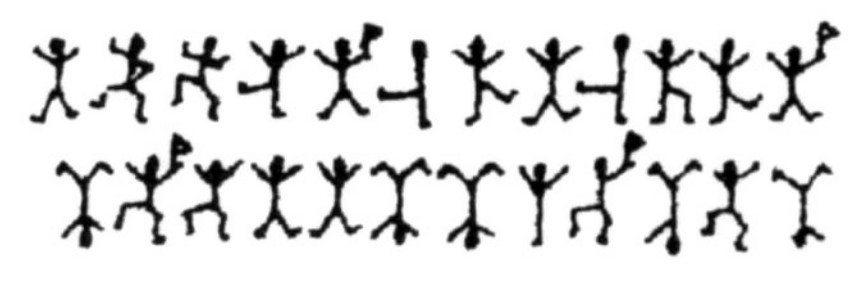
图10-8
福尔摩斯对着这些怪异的图案看了几分钟，发出一声沮丧的喊叫，接着对华生表示他们应尽快赶到马场村庄园。过后没多久，他所盼望的电报来了，看完后表示急需让丘比特知道目前的情况。隔了一天，他与华生抵达马场村庄园时，丘比特先生已中弹身亡，而他的太太艾尔西也中弹且情况相当危急。福尔摩斯问了一些问题后，就叫人送了一则短信息给艾尔里奇斯农场的阿奥·斯兰尼先生。处理完这一切，福尔摩斯向华生和警长解释了他是如何破解那几张画有小人的纸条的。他说只要看出这些符号（即跳舞的小人）代表字母，再应用密文的规则来分析，就不难找出答案。
“第一张纸条上的那句话很短，我只能稍有把握确定图10-9的小人代表字母E，因为在英文句子中E最常见，它出现的次数多到即便在一个较短的句子中也会重复。第一张纸条上的15个符号中有4个完全一样，因此把它看成E是合理的。这些图形中有的带一面小旗，有的没有，从小旗的分布来看，带旗的图形可能是用来把句子分成一个个单词的。我把这看作一个可以接受的假设，同时记下E是用图10-9表示的。
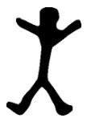
图10-9
“最难的问题来了，因为除了E以外，英文字母出现次数的顺序并不明确，大致来说出现次数多少的顺序为
T，A，O，I，N，S，H，R，D，L。
其中T，A，O，I出现的次数不相上下（英文字母中最常出现的前9个的频率是e：0.127；t：0.091；a：0.082；o：0.075；i：0.070；n：0.067；s：0.063；n：0.061；r：0.060），要是把每一种组合都试一遍，那会是一项没完没了的工作，所以只好等新材料来了再说。丘比特第二次来访的时候给了我另外两句短语和似乎只有一个单词的话，就是这几个不带小旗的符号。在这个由5个字母组成的单词中，第二个和第四个都是E，这个单词可能是sever（切断），也可能是lever（杠杆）或者nerer（决不）。无疑，使用最后这个词来回答一项请求的可能性极大，而且很可能是丘比特太太写的答复。假如这个判断正确，现在就多了3个符号分别代表N，V和R。但困难仍很大，然后一个很妙的想法使我知道了另外几个字母：我想这些恳求是来自一个在艾尔西年轻时就跟她亲近的人，那么一个两头是E，当中有3个别的字母的组合很可能就是ELSIE（艾尔西）这个名字。这一来我就找出了L， S和I。可是究竟恳求什么呢？在ELSIE前面的一个词只有4个字母，末尾是E，这个词必定是COME（来），我试过其他多种以E结尾的4字母单词，都不符合情况。这样就找出了C，O和M，现在可以回头再分析第一句话，把它分成单词，还不知道的字母就用点代替。经过这样的处理，这句话就变成
·M·ERE··ESL·NE·
“现在，第一个字母只能是A，这是最有帮助的发现，因为在这个短句中出现了3次。第二个词开头是H也是显而易见的，这句话就变成了
AMHEREA·ESLANEY
再把名字中所缺的字母添上
AMHEREABESLANEY（我来了，阿贝·斯兰尼）
有了这么多字母，就有把握解释第二句话了。这一句是这样的
A·ELRI·ES
我一看缺字母的地方只有加上T和G才有意义（意为住在艾尔里奇斯），并确定这个名字是写信人住的旅店或地方。‘后来怎么样，先生？’警长问。福尔摩斯说：‘我有充分的理由猜想阿贝·斯兰尼是美国人，因为阿贝是美式语言，而这些麻烦的起因又是来自从美国寄来的一封信，我也有充分的理由认为这件事带有犯罪的内情。女主人说的那些暗示她过去的话和她拒绝把实情告诉她丈夫的行为都使我往这方面去想。所以，我才给纽约警方的一个朋友发了一封电报，他回电说：阿贝·斯兰尼正是芝加哥最危险的骗子。就在我接到回电的那天晚上，丘比特寄来了最后一行小人，用已知的字母译出来就是
ELSIE·RE·ARETOMEETTHYGO
再加上两个P，这句话就完整了（艾尔西准备见上帝）。这说明这个流氓已从劝诱改为恐吓，所以我和华生立即赶去，但不幸的是仍晚了一步。”
福尔摩斯一说完，警长就急着去艾尔里奇斯逮捕斯兰尼。福尔摩斯说不必了，斯兰尼很快就会送上门来。不一会儿，斯兰尼来了，一进门就被警长戴上了手铐。斯兰尼承认罪行，并说这种秘密文字是艾尔西的父亲发明给他们在芝加哥的帮派所使用的，斯兰尼和艾尔西订过婚，但艾尔西无法容忍他们帮派的行径，就独自逃到伦敦。斯兰尼找到艾尔西的住处后，就发出了秘密信息。
奇怪的是，为何斯兰尼会自投罗网呢？福尔摩斯写的信息如图10-10所示。
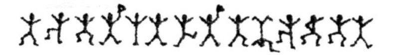
图10-10
你会发现它的意思是“马上到这里来”（COMEHEREATONCE）。斯兰尼当然确信这必定是艾尔西发来的，因为除了她别人不会知道这种秘密文字的书写规则。因此，他走进了这个圈套。
自古以来，加密与解密就如同魔道斗法，“魔高一尺，道高一丈”，此消彼长，循环不止。特别是在第二次世界大战期间，战事紧急，密码纷飞，隐藏战线的斗争丝毫不亚于冲锋肉搏的惨烈。待第二次世界大战结束后，硝烟散尽，世界平静，有智者终于抚平伤痛，潜心反思：密码的根本属性是什么？
我们分析一下上两节中关于传统密码的几个示例，可以发现一个共性，即密码的安全性完全依赖于密钥的秘密性。如何打破这个困境呢？当然得从密钥这边来动脑筋。传统密码最大的缺陷在于其加密钥匙和解密钥匙是对称的，也可以说解密钥匙很容易从加密钥匙推导出来，甚至有时候简单到解密钥匙就是加密钥匙。所以，突破之法就在于：打破加密钥匙和解密钥匙之间的对称性。这样的话即使给你加密钥匙，你也没有办法计算出或猜到解密钥匙。
在思考这个问题时，我们会从钥匙联想到门。许多公共建筑的大门从门内到门外时只要轻轻一推即可，毫无困难；但反过来则不行，必须有钥匙才能从门外进入建筑物内。从门内推门，表面上好像不需要钥匙，实际上是因为推的动作每个人都知道，可以看成公开的钥匙。门里门外是全然不同的两个世界，应如何打破加密钥匙与解密钥匙之间的对称性呢？乍看起来似乎不可能，然而门的比喻给了我们一些启发与暗示：出去简单、容易、快速；进来复杂、困难、缓慢。这样的东西到底是什么呢？是一种演算法，还是一个函数？这引起了数学家们的关注。
美国斯坦福大学的两位教授惠特菲尔德·迪菲及马丁·赫尔曼在1976年发表了一篇对现代编码理论有重要影响的论文。在论文中，他们提出了一个所谓单一方向进行的密码函数，这种函数须具备下述特性。
①对每一个自然数，有唯一自然数y=f（x）与之对应；
②反函数f -1存在，使f -1[ f(x)]=x；
③对这种函数f及其反函数f-1存在有效的演算法；
④即使密码函数f及其运算被知道了，反函数也无法得到。
在上述4个条件中，条件④当然是最关键的。
在探索的历史过程中，质数判定和大数分解之间的不同步现象，引起了数学家的高度重视。我们可以判定一个一二百位的数是否是质数，也可以找出这么多位的质数，但无法有效地分解一个一二百位的大合数。这种不同步现象称为“大数分解困难”，这种不对称、不同步性正好符合一个方向简单、容易、快速，另一个方向复杂、困难、缓慢的编码理论条件。在此指导思想下，一种公开密钥的密码体系产生了。
1978年，数学家罗纳德·李维斯特、阿迪·萨莫尔和伦纳德·阿德曼创造了一种公开密钥体系，称为RSA密码。详细介绍RSA密码在这本书中是不可能也无必要的，下面简要介绍其过程，并以示例说明。
（1）RSA的加密
①把字母序列ABC…XYZ编成平凡码：A=01，B=02，C=03，…，Z=26。
②宣布密钥 (e,n)，e、n是自然数。
③对用平凡码编写的明文M进行切分，这里M是一个自然数。
M=M1M2…Mk，使Mi＜n，i=1，2，…，k。
④计算
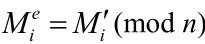
即得密文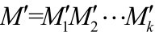
。（2）密钥 (e,n)的制作
①选取两个百位级大奇数p，q（这是绝密的）。
②公布n=p×q的n值。
③记r=(p-1)( q-1)，r不公开。
④ e为一个自然数，且e、r的最大公约数是1（e、r互质），公布e。
（3）解密方法
①选取自然数d，使1≤d≤r，
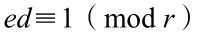
，d保密。②
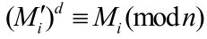
，得明文M=M1M2…Mk。上面即RSA密码的制作及解密方法。下面取两个小的质数举例说明：取p=73，q=97。于是有
① n=73×97=7081，r =(73-1)×(97-1) =6912。
②取e，使其满足(e,r)=(e,6912)=1，求得若干解，并取e=101，d=2669，其中ed≡1(mod 6912，这里r=6912)。
③ 若取明文 M=Pounds，则明文的平凡码为M=161521140419 (p=16,o=15,u=21,n=14,d=04,s=19)。
④切分M使M=M1M2M3，M1=1615，M2=2114，M3=0419。
⑤制作密文：M′=M′1M′2M′3(e=101,d=2699)。
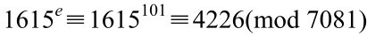
，M′1=4226。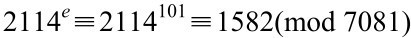
，M′2=1582。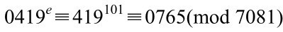
，M′3=0765。于是密码M′=422615820765。
⑥接收者解密：d=2669。
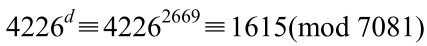
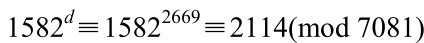
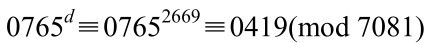
于是得明文M=161521140419（与明文的平凡码完全一致）。
对于RSA密码体系，第三者解密的难度非常大，难度的焦点就在于大质数n=p×q的分解。事实上，当今用40秒便可以判定一个一二百位的自然数是否是质数，所以制造RSA者可以很快确定p与q这两个大质数，进而定出n=p×q。但第三者想要把已知的n（一个两百位以上的自然数）分解成两个质数之积，大约需进行12×1023次运算，以每次运算所需时间为10-6秒计算，也需要3.8×109年。可见，RSA密码体系中的p与q的保密程度是极高的。不知p、q则不知r，进而不知d，从而不能把密文M′译成明文M。
不过，对RSA体系的保密性也得客观评价。1999年，科学家们在互联网上破译了信用卡及其他绝密信息所用的公开密钥机制，特别是学者们破译了欧洲信用卡传输与保密电子邮件RSA-155的编码机制。此过程需把一个155位的质数分解为两个质数的乘积。
这个庞大的数字是由荷兰首都阿姆斯特丹的一个由赫尔曼·德·里莱领导的集团用300台个人电脑及一台超级计算机成功分解得到的。现在美国通常用232位数进行加密，而美国政府则用309位数作为行政与军事的加密标准。但随着数学的进步与超级计算机的迅猛发展，难道还要用400位或以上的质数密钥吗？
1094173864157052742180970732
2040357612003732945449205990
9138421314763499842889347847
1799725789126733249762575289
9781833797076537244017146743
531593354333897
（155位数）
=
1026395928297411057720541965
7399167590071656780803806680
3341933521790711307779
（质数因子）
×
1066034883801684548209272203
6001287867920795857598928152
2270608237193062808643
（质数因子）